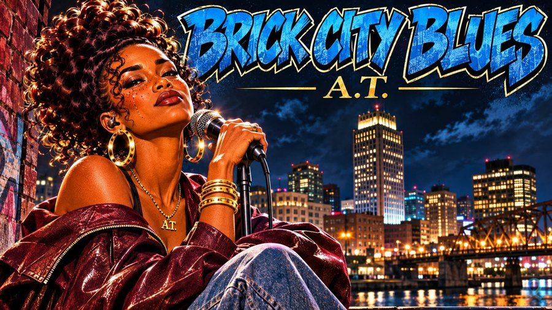

Track 06 · My Turn
Brick City Blues
NYU behind her, Newark ahead. A.T. crosses Broad & Market into grad school at Rutgers Newark, a third floor walk up off Broad, ramen in the pot and a landlord on the stairs. She screams for number 23 at Rutgers Stadium. He promises front row at her Essex County talent show... and the seat stays empty. She wins anyway. Then a letter, a goodbye in the parking lot, a warrant on her door, and a phone call home. Her girls carry the boxes. She grinds through the library, the diner, the open mic on Halsey and a Wednesday at the Apollo, walks across
 Watch the official video
Watch the official video
Lyrics
[Intro]
Brick City... yeah
Some love don't wait around to see you win
Mm... stay with me
[Verse 1]
Tassel on the mirror, NYU behind us
Crossed the river back to Jersey where the rent could find us
Rutgers Newark, I'm in music, notebooks full of rhymes
He in exercise science, two a days and early times
Third floor walk up off of Broad, the radiator knockin'
Ramen in the pot and every bill we keep on droppin'
Landlord on the stairs, "I need my money by the first"
"Or else" is all he said, and baby, "or else" is the worst
I'm waitin' tables Friday, he be liftin' at the dock
Splittin' one bus pass, countin' quarters on the block
Saturday I'm in the stands, my girls in red and black
Screamin' number twenty three, I got my baby's back
He scored and pointed at me, whole bleachers turned around
I thought that meant forever in a two bedroom town
Told him "Friday night, the talent show, Essex County"
He kissed my head and said "front row, baby, count me"
[Hook]
Brick City blues, I'm singin' with the lights on
Saved you a seat and it was empty all night long
I was there for you every time you made a move
Now I'm all alone with these Brick City blues
(Brick City) Ooh, Brick City blues
(Brick City) I still sing it through
[Verse 2]
Friday at the county, hands shakin' on the mic
Lookin' for his fitted in the third row, not in sight
Sang it anyway, I put the hurt into the note
Whole room stood up, the judges called my name, I almost choked
Trophy in my arms, my girls screamin' by the stage
Looked out for his face, just an empty seat, a turned page
Out back by the door, here he come with an excuse
Talkin' 'bout the bus, talkin' 'bout the coach, talkin' 'bout the news
My girls behind me, arms crossed, they ain't sayin' nothin' nice
He pulled out a letter, "baby, it's a full ride"
"Miami want me, Coral Gables, in the fall"
I said "you missed my night for this? you missed it all"
He said "it's my shot," then he turned around to go
Watched him walk away across the lot real slow
Got home, taped up on my door, a warrant from the court
Three days to pack my life, and I'm a whole month short
[Hook]
Brick City blues, I'm singin' with the lights on
Saved you a seat and it was empty all night long
I was there for you every time you made a move
Now I'm all alone with these Brick City blues
(Brick City) Ooh, Brick City blues
(Brick City) I still sing it through
[Bridge]
"Mama, can you hear me? Daddy, pick up the line
I lost him and the house all in the same night"
Mama said "baby, you was singin' before him"
Daddy said "come home if you need to, but you gon' win"
So I wiped my face and I packed my room
My girls carried boxes and we sang the whole way through
Couch at my homegirl's, books all on the floor
I ain't cryin' no more, I ain't cryin' no more
[Verse 3]
Mornings in the library, nights back at the diner
Fell asleep in class, professor tapped my binder
Open mic on Halsey, then a Wednesday up in Harlem
Every stage got bigger and I never had to call him
Rent paid on my own, every dollar from my voice
Dean's list on the fridge and every step was my choice
Then the big night downtown, Brick City in the seats
Mama and my daddy and my girls up on their feet
Last note, lights up, I look out at the crowd
There's a fitted in the back and a smile I know now
He came back to see it, standin' quiet by the door
I just smiled, 'cause I don't need it like before
[Final Hook]
Brick City blues, now I'm singin' with the lights on
Every seat is full and they singin' every song
I was there for me when I had nothin' left to lose
Now I'm on the top of these Brick City blues
(Brick City) Ooh, Brick City blues
(Brick City) I made it through
[Outro]
Brick City...
Look at me now.
Mm.
Written by Grey Beard and A.T. ℗ & © 2026 Threadia AI, Inc. All rights reserved.